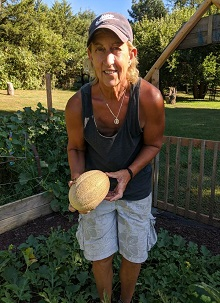
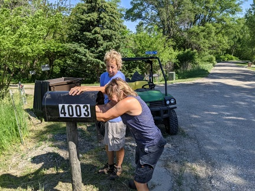
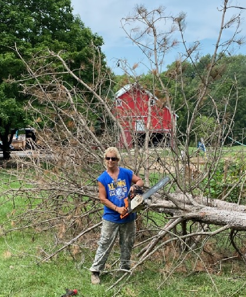

Jen's Favorite Hobbies
Gardening: The first picture is Jen showing off the canteloupe she and her son Noah and his girlfriend Clara had grown in the garden they set up at the Giving Lake Ranch. They were trying to weight loss goals so they created the garden named after Noah and Clara and spent all summer working on it.
Constructing/Fixing things: The next picture is Jen with her friend Patty working on the new mailbox trying to get it to stand up straight. Most of the fix-it projects at the ranch that have been repaired were done by Jen who has more tools than most men i know. The honey-do list belongs to Jen.
Wood working: The next picture is jen cutting up the big tree that fell at the Giving Lake this last fall during a storm. Jen loves working with wood and designing things out of the wood so she wouldn't call someone to cut up the tree. She carefully carved it so she could use the trunk piece to create animal shapes and craft project peieces for the kids to use to make crafts this summer.